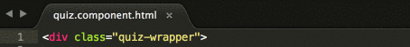
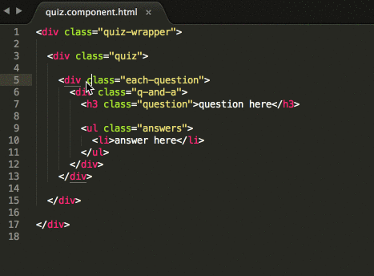
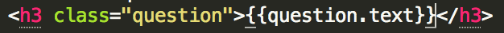
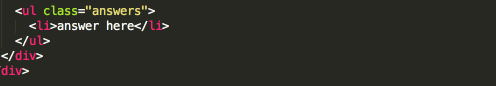
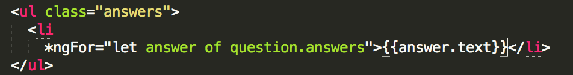
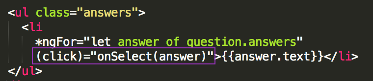
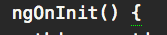
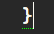
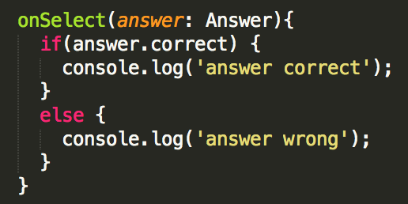

Part 4: Adding Data to Your Template
Now that you have your data ready, wire it up to your component’s template.
In Atom, open src/app/quiz/quiz.component.html.
In the
<div class="quiz-wrapper">HTML element at the top of the file, place your cursor directly before the>to add add an*ngIfattribute. Type:*ngIf="questions"
*ngIfis an Angular attribute directive that will only render our template IFthis.questionsis defined in our component.In the HTML element
<div class="each-question">, place your cursor directly in front of the>, press return, then press tab and then type the following to add an attribute:*ngFor="let question of questions; let i = index;"
To help make the code easier to read, the example above starts each attribute on it's own line.
What does this code do?
This is an
*ngFordirective that will repeat the HTML markup (including thedivHTML element with the classeach-question) for every question in your componentsthis.questionsarray.It also sets a variable named
itoindex. This helps to keep track of what question is currently being rendered in the template by giving you theindexof thatquestion. Question 1 is Index 0. Question 2 is Index 1. This will come into play later in the tutorial.In the
<h3 class="question">HTML element, replace the "question here" text with:{{question.text}}
This will use the question’s text from the data you added in Part 3 to populate your HTML template. The data is connected to the HTML template through the quiz.component.ts file.
Next, loop through the question's answers. Add an
*ngForattribute to the<li>HTML element. Place your cursor before the>on the element, press return, then tab and then type:*ngFor="let answer of question.answers"
Replace the text "answer here" inside the opening and closing
liHTML tags with the following text (including the curly braces):{{answer.text}}
You now have your template rendering questions and answers, but nothing happens when a user selects an answer. Add a click event so you can start tracking clicks.
In that same
<li>tag, add a(click)attribute on the line below the*ngFor. Type:(click)="onSelect(answer)"
What does this code do?
When a user clicks on the
<li>HTML element holding the answer data, a method namedonSelectin the Component's TypeScript file is executed and passes theanswerdata through to theonSelectmethod. (You haven't yet defined theonSelectmethod in the quiz.component.ts file just yet, you'll do that next!
Save the src/app/quiz/quiz.component.html file.
In Atom, open the src/app/quiz/quiz.component.ts file. Copy the code below:
onSelect(answer: Answer){ if (answer.correct) { console.log('answer correct'); } else { console.log('answer wrong'); } }Paste the code in after the closing curly brace of the
ngOnInit() {...}(the method does have content inside the curly braces in your file).If you place your cursor near a parentheses, curly brace, or square bracket, Atom will highlight the corresponding opening or closing parentheses, curly brace, or square bracket with a small green dotted line to help you figure out code alignment.



What does this code do?
You're declaring that the
answerparameter is of data typeAnswer. Then, if the selected answer (the answer passed to theonSelectmethod) is correct, we log "answer correct" to the development console. If the selected answer is incorrect, we log "answer wrong" to the development console.Save your src/app/quiz/quiz.component.ts file.
In Google Chrome, view your application using your new data.
Application not working? You may have had an error during development that the server wasn't able to overcome. Try stopping the
ng servecommand in iTerm2 (mac) or Git Bash (windows) by pressing thectrl+ckeys and restarting it by typingng serveand pressing enter. Refresh the page in Google Chrome. If you're still having issues, grab a mentor to help troubleshoot!In Google Chrome, open the development console on a mac by pressing the
command+option+jkeys or on a windows machine by pressingcontrol+shift+jkeys. See what happens in the console when you interact with your quiz application!
Your src/app/quiz/quiz.component.ts file should look like the answer key here: [http://bit.ly/spa-6_b].